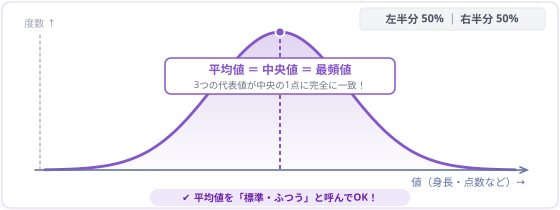
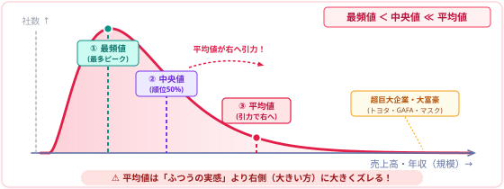
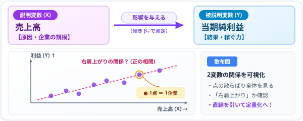
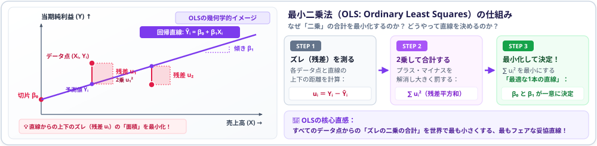
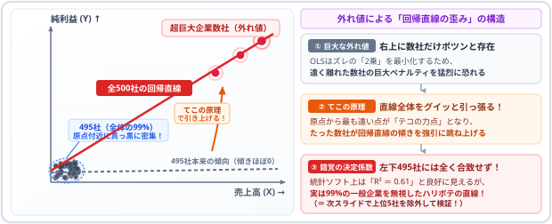

プレゼミ
Day3 : 「平均」の罠と記述統計／実証分析の武器としての単回帰分析
今日の95分
| 時間 | 誰が | 内容 |
|---|---|---|
| 00–05 | 教員 | OP／事前課題Bの集計結果：平均 vs 中央値 |
| 05–15 | 学生 | 予想の振り返り：「なぜ平均が中央値の6.6倍もあるのか？」 |
| 15–35 | 教員 | 講義①：記述統計の基礎（分布の歪み、外れ値、ロングテール） |
| 35–55 | 学生 | webR演習①：500社の記述統計量と分布の可視化 |
| 55–75 | 教員+学生 | 講義② & webR演習②：単回帰分析入門（OLSと回帰直線の解釈） |
| 75–85 | 学生 | ペアワーク：外れ値（超巨大企業）の影響と対数変換の威力 |
| 85–95 | 教員 | 今日の裏切り（Twist）／次回「環境構築大会（Positron導入）」案内 |
今日のゴール：
① 「平均」という言葉の罠を理解し、データの分布の形（歪み・外れ値）を記述統計量で見抜けるようになる
② ブラウザ上のR（webR）で、記述統計量の算出と単回帰分析（OLS）を自分の手で実行・解釈できるようになる
③ なぜ実証分析では「金額」ではなく「比率」や「対数（log）」を使うのか、その理由を体感する
オープニング & 事前課題Bの集計！
今日の問い
「平均的な日本企業」とは、どんな企業か？
- ニュースでよく耳にする言葉：
「上場企業の平均売上高は〇〇億円」「大卒初任給の平均は〇〇万円」 - 私たちは無意識に、「平均 ＝ ふつう・標準的・真ん中あたり」だと思い込んでいます
- しかし、実証研究者が最も警戒する言葉こそが、この「平均」です
- なぜなら、データの世界では「平均」は全く「ふつう」ではないからです
事前課題Bの集計結果
事前課題Bで、みなさんに次の問いを投げかけました：
Q．日本の上場企業（500社）の売上高を集計したとき、「平均値」と「中央値」はどちらが大きいと思いますか？
みなさんの予想分布（集計速報）
| 選択肢 | 予想内容 | 割合 |
|---|---|---|
| ① | 「平均値」がはるかに大きい（中央値の 2倍以上） | 18% |
| ② | 「平均値」が少し大きい（中央値の 1.1〜2倍未満） | 54% |
| ③ | 「平均値」と「中央値」はほぼ同じ（左右対称） | 24% |
| ④ | 「中央値」のほうが大きい | 4% |
約 8割の学生 が「ほぼ同じ」か「少し大きい（2倍未満）」と予想しました！
みなさんが書いた理由（抜粋）
- 「大企業もあれば中小企業もあるから、平均が少し引っ張られる程度だと思う」
- 「上場企業同士なら、そこまで極端な差はないのではないか」
- 「正規分布に近い左右対称の富士山型になるはず」
- 「極端に売上が大きい大企業がいくつかあるから、平均のほうが大きいと思う」
正解発表：データの衝撃
配布データ（東証上場企業500社・2024年度決算）の実際の集計値です。
実際の計算結果（500社）
- 中央値（Median）： \mathbf{46,404 \text{ 百万円}} \quad (\text{約 464億円})
- 平均値（Mean）： \mathbf{306,896 \text{ 百万円}} \quad (\text{約 3,069億円})
- 倍率（平均値 \div 中央値）： \mathbf{6.61 \text{ 倍！！}}
さらに恐ろしい事実
平均値（3,069億円）未満の企業の割合：
\frac{453 \text{社}}{500 \text{社}} = \mathbf{90.6\%}
なんと、全体の9割以上の企業が「平均」より下にいます！
「平均的な企業」を目指すと、上位 9.4% の超エリート企業を見ることになる！
ペアワーク（3分）：なぜこんなことが起きるのか？
隣の人と、次の問いについて話し合ってください。
ディスカッション・テーマ
- なぜ「平均値」と「中央値」に 6.6倍もの乖離 が生まれるのでしょうか？
- もしあなたが就職活動で「この業界の平均年収は800万円です」という情報を信じたら、どんな落とし穴（リスク）があるでしょうか？
考えるヒント①：
最小値は 566百万円（約5.7億円）ですが、最大値はいくらだと思いますか？
考えるヒント②：
日本のトップ企業（トヨタ自動車など）の売上規模はどれくらいでしょうか？
第1部：記述統計学の基礎 ── データの「形」を暴く
なぜ「平均」は騙されるのか？
統計学において、データの中心を表す指標（代表値）には複数の種類があります。
1. 平均値（Mean: 重心）
\bar{x} = \frac{1}{n} \sum_{i=1}^n x_i = \frac{x_1 + x_2 + \dots + x_n}{n}
- 全員の数値を足して、人数で割った値
- メリット：数学的に扱いやすく、全体の総量を反映する
- 致命的な弱点：極端に大きい値（外れ値）に強烈に引っ張られる！
2. 中央値（Median: ど真ん中）
- データを小さい順に並べたとき、ちょうど50%目の順位にいる企業の値
- メリット：外れ値の影響をまったく受けない（頑健性: Robustness）
- 現実の姿：「ふつうの企業」「一般的な実感」に最も近い指標
例え話：居酒屋に客が9人いて、全員の年収が400万円だとします（平均＝400万円）。
そこに年収100億円のイーロン・マスクが1人入店してきたら？
→ 平均年収は一瞬で「10億360万円」に跳ね上がります！ でも、元からいた9人の年収は400万円のままです。
データの分布：正規分布 vs 右に歪んだ分布
私たちが無意識に思い浮かべる「富士山型」の分布と、現実の経済データの分布は根本的に異なります。
① 正規分布（左右対称）
- 身長やテストの点数、サイコロの出目
- 平均値 ＝ 中央値 ＝ 最頻値 が一致する
- 平均値を「標準・代表」と呼んでよい世界

② 右に歪んだ分布（ロングテール）
- 企業の売上高、個人の所得、フォロワー数
- 最頻値 ＜ 中央値 ＜＜ 平均値
- 裾野が右側に極端に長い（べき乗則・パレート分布）

実証分析の鉄則：
社会科学・経済・ビジネスのデータは、ほぼ100%「右に歪んだ分布」をしています。
だからこそ、平均値だけを見て分析を進めると、現実を完全に見誤ります。
散らばり（ばらつき）を測る指標
「真ん中はどこか（代表値）」がわかったら、次は「どれくらい散らばっているか（散布度）」を測ります。
① 範囲（Range）
\text{Range} = \text{最大値} - \text{最小値}
- 最も直感的で素朴な散布度
- 欠点：外れ値がたった1つあるだけで極端に膨らんでしまう
② 四分位範囲（IQR）
\text{IQR} = Q_3 - Q_1
- 境界値：Q1 (25%), Q2 (中央値), Q3 (75%)
- 真ん中50%の幅を測定
- 利点：外れ値に極めて強い！
③ 分散・標準偏差（SD）
s = \sqrt{\frac{1}{n-1}\sum_{i=1}^n (x_i - \bar{x})^2}
- 平均からの離れの度合い
- 統計学で最も標準的に使われる
- 注意：平均を使うため外れ値の影響大
五数要約（Five-number summary）：
最小値（Min）、Q1、中央値（Median）、Q3、最大値（Max）の5つを見ることで、データの全体像が一目でわかります。Rでは summary() 関数一発で出力されます！
webR演習①：500社の記述統計を計算する
スライド上でRを動かそう！
- ここから先のコードは、スライド内で直接実行・編集できます（webR技術）
- 面倒なインストールは不要です。枠の右上の 「▶ Run Code」ボタン を押してください
- 初回のみwebRエンジンの読み込みに数秒かかります
ステップ1：データが正しく読み込まれているか確認しましょう
演習①：売上高の記述統計量を計算する
Rの基本関数を使って、売上高（sales）の統計量を実際に計算してみましょう。
注目ポイント：
標準偏差（約182億円）が、中央値（約464億円）をはるかに上回っています！
これも、少数の超巨大企業が分散を極限まで押し上げている証拠です。
演習②：五数要約と「平均未満」の割合
summary() 関数を使って、全体のパーセンタイルを確認し、平均未満の企業をカウントしてみましょう。
トップの企業は売上高 38兆円（38,000,000百万円）！
500社全体の売上合計のうち、上位5社だけで 約6割 を占めています。
演習③：分布をグラフで可視化する
数字の羅列を見るだけでなく、グラフ（ヒストグラム）を描いてデータの形を目で確かめましょう。
グラフを見て気づくこと：
データが左端（0付近）にびっしり潰れて壁のようになり、右側へ向かって薄く長く伸びています（ロングテール）。
処方箋：対数変換（Log Transformation）の魔法
右に歪んだデータを扱うとき、統計学や計量経済学で最も広く使われる技が 「対数変換（自然対数 \ln / \log）」 です。
なぜ対数をとるのか？
- 10倍、100倍、10,000倍という「桁の違い」を均等な目盛りに圧縮する
- \log(100) \approx 4.6、\log(1000) \approx 6.9、\log(38000000) \approx 17.5
- 極端に歪んだデータが、綺麗な「富士山型（正規分布）」に近づく！
対数変換したヒストグラム
右に潰れていたデータが、左右対称の美しい山型に広がりました！
これが、「実証分析でなぜみんな \log をとるのか」の最大の理由です。
第2部：実証分析の武器 ── 単回帰分析（OLS）
記述統計から「関係性の分析」へ
データの「形」がわかったら、いよいよ実証分析の真骨頂である「2つの変数の関係」を探ります。
今日のリサーチ・クエスチョン
「売上高（規模）が大きい企業ほど、当期純利益（稼ぐ力）も大きいのか？」
「売上が1億円増えると、利益は何万円増えるのか？」
- 単に「関係がありそう」で終わらせない
- 具体的な「数値（傾き）」として測定する
- そのための最強の道具が 回帰分析（Regression Analysis）
2変数の関係を可視化する：散布図
- 横軸（X）：売上高（説明変数 / 独立変数）
- 縦軸（Y）：当期純利益（被説明変数 / 従属変数）
- 1つの点が「1つの企業」を表す

単回帰モデルの数式と直感
2つの変数の関係を、最もシンプルな「直線の方程式」で表します。
Y_i = \beta_0 + \beta_1 X_i + u_i
各パーツの意味
- Y_i（被説明変数 / 目的変数）：
説明したい結果（例：第i社の当期純利益） - X_i（説明変数 / 独立変数）：
原因となる変数（例：第i社の売上高） - \beta_1（回帰係数 / 傾き）：分析で最も重要な数値！
Xが1単位増えたとき、Yが平均して何単位変化するか - \beta_0（切片）：XがゼロのときのYの予測値
- u_i（誤差項 / 残差）：
直線だけでは説明できない個別の事情・ノイズ
どうやって直線を引くのか？（最小二乗法: OLS）
- 点の散らばりの中に、定規で直線を引くことを考えます
- どんな直線が「一番フィットしている」と言えるか？
- 各点と直線のズレ（残差 u_i）を計算し、「残差の2乗の合計が最も小さくなる直線」を選ぶ！
- これを 最小二乗法（Ordinary Least Squares: OLS） と呼びます
OLSの直感をイメージで掴む

回帰分析が教えてくれる3大情報：
- 傾きの向きと大きさ（\beta_1）：プラスの関係か、マイナスの関係か？ 1単位増えるといくら増えるか？
- 統計的有意性（p値 / t値）：その傾きは、たまたま偶然現れたものか？ それとも確実な関係か？（p < 0.05 で「有意」）
- 決定係数（R^2）：引いた直線は、データの散らばりを何％説明できているか？（0〜1の間の値）
webR演習②：単回帰分析をRで実行する
演習④：lm() 関数で単回帰分析を実行する
Rで回帰分析を行うには、lm()（Linear Modelの略）関数を使います。
- 書式：
lm(被説明変数 ~ 説明変数, data = データフレーム名) - チルダ
~は「〜を、〜で説明する」という意味です
回帰分析の出力結果の読み方
さきほどの summary(model1) の結果から、重要な部分を抜き出して解釈します。
Coefficients:
Estimate Std. Error t value Pr(>|t|)
(Intercept) -3.445e+03 3.473e+03 -0.992 0.322
sales 4.511e-02 1.599e-03 28.219 <2e-16 ***
---
Multiple R-squared: 0.6152① 傾き（sales の Estimate）
- 数値：
0.04511（約 4.5%） - 解釈：売上高が1百万円増えると、当期純利益は平均して 0.0451百万円（約4.5万円） 増える
- 企業の売上高純利益率（マージン）が平均して約4.5%であることを意味します！
② p値（Pr(>|t|)）と決定係数（R^2）
- p値：
< 2e-16 ***- p < 0.001（アスタリスク3つ）
- 「売上と利益には関係がない」という偶然が起きる確率はほぼゼロ！ → 統計的に極めて有意
- 決定係数 R^2：
0.6152- 当期純利益のばらつきの 約 61.5% が、売上高（規模）だけで説明できる！
演習⑤：回帰直線をグラフに描く
散布図の上に、いま推定した回帰直線を重ねてプロットしてみましょう。
ちょっと待ってください……！ このグラフを見て、何か違和感はありませんか？
ペアワーク ＆ 今日の裏切り（Twist）
今日の裏切り：その回帰直線、信じていいのか？
さきほどのグラフをもう一度よく見てください。
グラフに隠された「恐ろしい事実」
- データの 99%（約495社） は、左下の原点付近に真っ黒な塊となって潰れています！
- 右上のほうに、ポツンと離れて浮いている点が数個（上位数社）あるだけです
- ということは……？
- 「この赤い直線の傾きは、右上のたった数社の超巨大企業によって無理やり決められているのではないか？」
レバレッジ・ポイント（てこの原理）

外れ値があると、平均値だけでなく、回帰直線までもが激しく歪んでしまうのです！
実験：上位5社を除いたらどうなるか？
この疑いを確かめるために、売上高トップ5社を除外した495社で、もう一度回帰分析をしてみましょう！
全500社の場合
- 傾き：
0.0451（利益率 4.5%） - 決定係数 R^2：
0.6152
上位5社を除いた場合（495社）
- 傾き：
0.0602（利益率 6.0% に急上昇！） - 決定係数 R^2：
0.8682（なんと 87% に激変！）
解決策：実証会計・経済学の2大アプローチ
では、このような「規模の歪み・外れ値」があるデータに対して、研究者はどう立ち向かうのでしょうか？
アプローチ①：比率にする（スケーリング）
- 金額のまま比較するのをやめる！
- 売上高や総資産で割って「比率（率）」に変換する
- 売上高純利益率 ＝ 当期純利益 \div 売上高
- ROE ＝ 当期純利益 \div 自己資本
- ROA ＝ 当期純利益 \div 総資産
- 前回（第2回）学んだ「ROE」は、まさにこの規模の格差を消し去るための知恵だったのです！
アプローチ②：対数回帰モデル（Log-Log）
- 両方の変数に対数をとる： \log(\text{net\_income}_i) = \beta_0 + \beta_1 \log(\text{sales}_i) + u_i
- メリット：外れ値の影響を自動的に抑え込み、全企業を均等に扱える
- 係数の解釈（弾力性）：
「売上が 1% 増えたとき、利益は何 % 増えるか？」を表す美しいモデルになる
演習⑥：対数回帰モデルを体験する
黒字企業（利益がプラスの企業）を対象に、両対数回帰（Log-Log回帰）を回してみましょう。
傾き \beta_1 \approx 1.02：売上高が 1% 増加すると、当期純利益は約 1.02% 増加する（ほぼ比例関係）！
データが散布図全体にきれいに分散し、特定の巨大企業に引きずられずに直線がフィットしています。
今日のまとめ & 次回に向けて
今日のまとめ
- 「平均」という言葉を疑え
- 社会科学・企業データの分布は、ほぼ例外なく右に歪んだロングテール（べき乗則）をしている。
- 上場企業500社でも、平均値（約3,069億円）は中央値（約464億円）の6.6倍に達し、90%以上の企業が平均未満だった。
- データの「形」を見る記述統計
- 平均値だけでなく、中央値（Median）や四分位範囲（IQR）、五数要約を見る習慣をつける。
- 歪んだ分布には対数変換（\log）が極めて有効。
- 実証分析の武器：単回帰分析（OLS）
- 散布図に「最もフィットする直線」を引き、傾き（影響度）・p値（有意性）・R^2（説明力）を取り出す。
- 外れ値の罠と処方箋
- たった数社の外れ値が回帰直線を大きく歪める。
- だからこそ、「比率化（ROEや利益率）」や「対数モデル」が必要になる！
次回（第4回）：環境構築大会！
次回は、プレゼミ前半の最大の山場です！
教室で全員一斉に、自分のノートPCに 「本格的なデータ分析環境」 を構築します！
次回導入する次世代IDE：Positron
- RStudioを作ったPosit社が開発した、VS Codeベースの最新鋭データ分析IDE
- 強力なData Explorer（クリックでデータの分布や要約統計量を一瞬で確認）
- 変数ペイン（Variables）、プロット履歴、ターミナルが完全統合
- これからデータ分析を学ぶ人にとって最も快適な環境です！
次回に向けた準備（必須！）
教室に持参するもの
- ノートPC（Windows または Mac）
- 必ず前日夜に満充電にして持ってきてください！
- PCの空き容量の確認
- 3GB 以上の空きディスク容量が必要です
- 空き容量が足りない人は、不要な動画やファイルを整理しておいてください
事前課題の案内
| 課題 | 内容 | 目安時間 | 提出 |
|---|---|---|---|
| A. 復習 | 配布スクリプト（Positron用）を手元で確認し、記述統計と回帰分析のコードを眺める | 15分 | なし |
| B. 予想する | 予想シートC：Rでデータ集計を行うと、Excelと比べて作業時間は何分の1になるか？ | 3分 | 必須（moodle） |
| C. PC準備 | ノートPCの充電 ＆ ディスク空き容量（3GB以上）の確保 | 5分 | なし |
- 予想シートC は moodle+R から前日23:59までに提出してください。
- 次回使う実習用データとコード（
03_positron_practice.R）は、moodleおよびリポジトリからダウンロードできます。 - 不明点や質問はいつでも：📧
matsuura@fc.ritsumei.ac.jp - それでは、次回お会いしましょう！ お疲れ様でした！

Ritsumeikan University, Business Administration